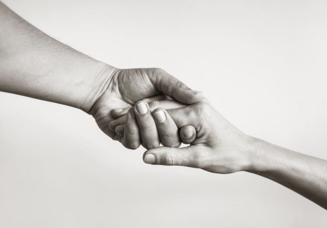

Our Work
Charity Search is a research tool for anyone looking to make a difference
You can use Charity Navigator to find and support thousands of charities that align with your passions and values. We use data from the IRS, partners, and the charities themselves to power our unbiased ratings so that you can give with confidence.